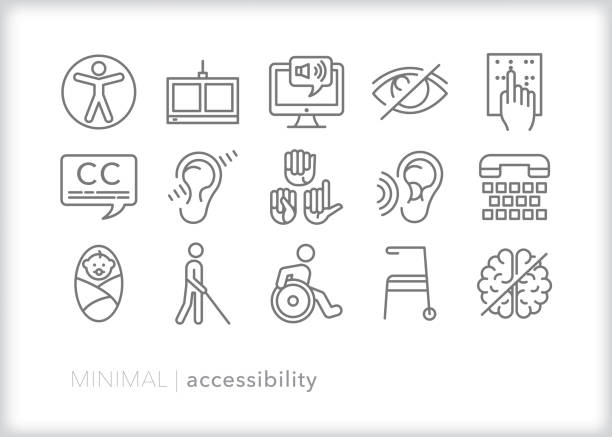

Sección 1: Accesibilidad Web
En esta sección exploramos cómo diseñar una página web accesible para todos los usuarios, independientemente de sus capacidades.

En esta sección exploramos cómo diseñar una página web accesible para todos los usuarios, independientemente de sus capacidades.
Los principios de accesibilidad incluyen el diseño de páginas web que sean perceptibles, operables, comprensibles y robustas.
